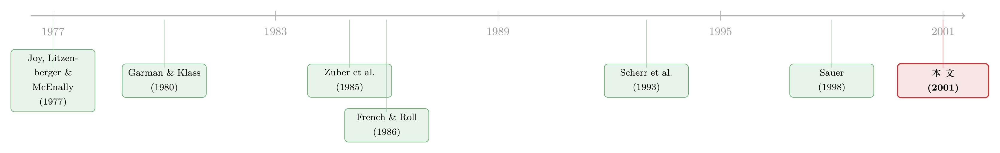

把股票拆成一支球队：当『公开信息』只在闭市时降临
本文读的是 Brown & Hartzell (2001, JFE)：他们抓住了一个几乎为研究者量身定做的标的——公开上市的波士顿凯尔特人有限合伙份额。球队每年打 82 场球，比赛结果可量化、只在股市闭市时揭晓、且有博彩点差作为「事前预期」的现成代理。结果是：球赛显著推动份额的收益、成交量与波动率；输球比赢球更刺激；季后赛影响更大;而最耐人寻味的反转是——比赛在闭市时打完，由此产生的波动率却大多在开市后才爆发，作者把它读作「私人信息交易」留下的指纹。
1 引言：一道几乎不可能凑齐的实验条件
做实证金融的人，大概都向往过这样一种数据：信息信号频繁地到来、容易量化、只在市场关门时发生，而且还有一个事先可观测的预期值摆在那里供你扣除。
可现实里，价值相关的信息几乎从不这么听话。最规律的信号——比如盈余公告——一年也只有寥寥几次；它们往往在交易时段里被公布，还总是和别的消息搅在一起；即便投资者预期到要出公告，研究者也常常只能拿「分析师预测均值」这种粗糙的代理去逼近市场的真实预期。信号稀少、混杂、预期不可观测，这是事件研究永恒的三道坎。
于是 Brown 和 Hartzell 做了一件聪明的事：他们没有去改造方法，而是去找了一个把这三道坎一次性填平的标的——波士顿凯尔特人有限合伙 (Boston Celtics Limited Partnership, LP)。
这家「公司」从 1986 年 12 月 4 日起在纽交所挂牌交易。它的收入几乎完全来自一支球队的运营，所以球队每年打的那 82 场常规赛（还不算季后赛），就成了关于这家公司经营状况的、一个接一个的高频信号。更妙的是：比赛只在晚上打，股市早已闭市；而博彩市场的点差 (point spread)，恰好把「市场对这场球的事前预期」明明白白地写了出来。
一年的球赛能提供多少信号？作者算过一笔账：一个赛季的比赛，差不多顶得上约 20 年的季度盈余公告。这正是这个标的最奢侈的地方——它让你几乎可以忽略掉那些会污染低频研究的结构性变化。
2 数据：一支被做成股票的球队
样本期从 1987 年 1 月 1 日到 1998 年 5 月 31 日，跨 12 个赛季，最终得到 2,884 个日收益与 1,032 场比赛（剔除没有点差的场次后，可对点差的有 997 场）。
数据的拼图来自好几处：日收益与成交量取自 CRSP（连同 CRSP 等权指数）；1993 年到 1998 年的盘中、买卖价与开盘-收盘数据取自 TAQ；每日开盘、最高、最低价来自 Prophet Data Services；点差则来自拉斯维加斯博彩市场，由 Livingston（1990、1992、1995）和一个叫 Gold Sheet 的网络博彩信息商提供。Livingston 编纂的点差以比赛当日下午 5:00（EST）为准，足以捕捉绝大多数下注者的预期。
这里有两个细节值得记住，因为它们决定了这篇文章能问什么、不能问什么。
第一，这支「股票」是出了名的不活跃。 全样本期日均成交量约 4,500 股；1993–1998 的 TAQ 数据显示，平均一天只有约 12 笔交易，平均每笔 350 股。平均市值约 1.15 亿美元，约 6.2 百万份在外。机构持仓更是微乎其微——没有任何机构持有超过 1% 的份额，1998 年 10 月 Bloomberg 列出的机构总持仓约为全部份额的 0.3%。这是一个几乎纯由散户构成、且交易稀薄的市场。
第二，点差是个出奇好的预测器。 在这个样本里，对着点差看，凯尔特人 498 胜 499 负——几乎是完美的对半开。换句话说，博彩市场对这支球队的预期，平均而言准得惊人。这正是我们想要的「事前预期」基准。
3 第一问：球赛到底「算不算数」？
要让球赛能撬动股价，得先迈过一道经济学的关：球队赢球，真的会变成公司的现金流吗？
作者分两步回答。第一步，他们用《Financial World》1991–1997 年对各大体育franchise的估值数据，跑了一组随机效应 (random effects) 回归，把球队的特许经营价值 (franchise value) 与经营利润，回归到最近两个赛季的胜率上（Hausman 检验未能拒绝随机效应的设定）。结果很干净：胜率每提高 10 个百分点，下一年的特许经营价值平均高出约 $2.6 百万（1% 显著），经营利润平均高出约 $740,000（同样 1% 显著）。
但特许经营价值是《Financial World》用乘数估出来的，多少带点主观。于是第二步，作者只盯凯尔特人自己：把「净篮球收入」的变化回归到上赛季胜场数上。结论一致——多赢一场球，会让每股净收入增加近 $0.06（5% 显著）；若把季后赛收入也算进去，多赢一场对应约 $290,000 的净收入增量（5% 显著）。
为什么赢球能变成钱？门票（赢球的队更敢涨价）、包厢长约、本地转播与周边、以及最直接、最弹性的那一块——季后赛。整个样本里，凯尔特人每多打一场季后赛，净收入约 $200,000。一个戏剧性的数字：1992 年，归属有限合伙人的净收入是 $1,149,285，而其中来自季后赛的净收入高达 $1,733,818——是打进季后赛，把每股 $0.09 的年度亏损，硬生生翻成了每股 $0.18 的盈利。
这一步看似只是「热身」，其实是整篇文章的逻辑地基：只有先确认「赢球→现金流」这条链真实存在，后面「球赛→股价」的检验才不是无源之水。
接着，一个自然的问题是：链条确认了，可交易成本会不会把任何可观测的效应都磨平？毕竟，行动是有成本的，投资者大可以攒着信息、等修正足够大了再出手——若如此，逐场比赛对股价的影响就会小到看不见。这就引出了本文第一个可检验的零假设：凯尔特人份额的收益与交易活动（成交量、波动率）与球队战绩无关——通俗讲，「球赛不算数」。
4 成交量与波动率：球赛确实「算数」
最朴素的检验，是看赛季内外、赛后与非赛后，成交量和波动率是否不同。
成交量这边（用非参数的 Mann–Whitney U 检验）：全样本日均 4,531 股；赛季内 5,018 股显著高于赛季外的 3,809 股（p = 0.000）；跟在比赛之后的交易日，日均 4,934 股，显著高于其他交易日的 4,378 股（p = 0.012）。
波动率这边，作者没有用粗糙的收盘-收盘估计，而是搬出了 Garman & Klass (1980) 的「Best」尺度不变估计量——它同时吃进每日的开、高、低、收四个价格，作者称其效率约为只用收盘价估计量的 7.4 倍。它的形式是论文中的 Eq. (1)：
$$\sigma_t^2 \approx 0.511\,(u_t - d_t)^2 \;-\; 0.019\,[\,c_t(u_t + d_t) - 2u_t d_t\,] \;-\; 0.383\,c_t^2$$
其中 \(u_t,\,d_t,\,c_t\) 分别是当日最高价、最低价、收盘价减去开盘价后的值。
用它算出来，全样本的年化波动率（标准差）为 15.38%。赛季内的 15.68% 显著高于赛季外的 14.94%（p = 0.000）；赛后交易日的 15.92%，显著高于其他日子的 15.18%、以及赛季内非赛后日的 15.48%（两个差异都在 5% 显著）。
无论是成交量还是波动率，都呈现出同一个清晰的排序：赛季外最冷清 → 赛季内非赛后日居中 → 赛季内赛后日最活跃。第一个零假设被干脆地拒绝了：是的，球赛算数。
5 收益：把「预期」扣掉之后，剩下的才是新信息
成交量和波动率说的是「有动静」，但收益才是检验信息含量的正题。
这里要小心一个有效市场的陷阱：如果份额本就按公司业绩交易、而业绩又系于球队战绩，那么被预期到的比赛结果，早就该在开赛前进了价格。凯尔特人赢了、但市场本就预期它会赢，这场胜利就没带来关于未来现金流的新信息。所以，把比赛结果未经预期调整地拿去和收益做回归，本就不该看到很强的关系。
捕捉市场预期的最自然的工具，就是博彩点差。直觉上，点差应当反映预期的分差：下注者凭私人信息或更强的预测力下注，把信念压进了这个「博彩市场的价格」里，直到点差与他们对预期结果的判断相符（在交易成本允许的范围内）。Sauer (1998) 综述了这一文献，结论是「点差作为一条规律，是分差分布中位数的有效估计」。
于是 Brown 和 Hartzell 比较了「用不用点差校正」两种做法。一个颇为重要的发现是：控制点差（即扣除预期）对这些关系几乎没有影响。这看似平淡，却恰恰说明：球赛对收益的影响，主要不是来自「赢/输」这个粗糙事实本身相对市场预期的偏离被精确度量后才显形的——在这个交易稀薄、几乎全是散户的市场里，投资者更像是对「赢了还是输了」这个原始结果做反应，而非对「相对点差跑赢/跑输了多少」做精细的贝叶斯更新。
几个更具体的结果：
- 收益反映比赛结果，而在常规赛里，是输球在驱动这层关系——这是一种典型的不对称反应（投资者对坏消息更敏感）。
- 季后赛比赛有显著的增量影响，但这一效应对赢球和输球都成立——季后赛事关重大，无论胜负都是大新闻。
6 真正的反转：闭市发生的事，为什么在开市才「爆」？
到这里，故事还只是「球赛会影响股价」，算不上惊艳。这篇文章真正立得住的，是最后那一步的反转。
比赛在晚上打、在股市闭市时就尘埃落定。按最朴素的有效市场直觉，所有由比赛结果带来的价格调整，应当在次日开盘那一刻一次性完成——开盘价就该完整地反映昨晚的胜负。
但数据说不是。作者发现：开盘价并未完全反映比赛结果；与球赛相伴的那部分超额波动率，大部分发生在市场开门之后，而不是凝结在开盘的跳空里。一个信息在闭市时就已经百分百公开，价格的剧烈调整却偏要等到开市、等到人们真正开始交易时才发生。
这正是本文呼应、并贡献于的那个经典议题。French & Roll (1986) 早就发现，股票在开市时段的波动率远高于闭市时段，并推测这背后是「交易者基于私人信息行动」——是交易本身、而非日历时间的流逝，在制造波动。凯尔特人提供了一个近乎纯净的检验场：这里的「新闻」在闭市时已完全公开，可波动率依旧赖在开市时段才释放。作者据此把它读作 French–Roll 假说的一条新证据：开市与闭市波动率之差，很大程度上要归因于交易者（在此是基于对公开信息的私人解读）的交易行为。
（关于价格究竟在哪些时段被「发现」，可参见《几乎没人交易的那几个小时，价格却没有闲着》；而关于公开信息究竟要多久才钻进价格，可参见《价格反应，从「分钟」缩短到「秒」》。）
别把这条结论误读成「市场无效」。作者的解读更微妙：公开信息要进入价格，需要有人去交易；而交易要么因人而异地夹带着对同一公开信息的私人解读，要么受制于交易成本与稀薄的流动性。信息「公开」与价格「正确」之间，隔着一层交易摩擦。
7 两个非比赛事件：一个安慰剂式的旁证
为了佐证「是球队相关信息在驱动份额价值」，作者还考察了两个非比赛事件：新球馆（FleetCenter）的落成，与主教练 Rick Pitino 的加盟。新球馆把门票收入从波士顿花园时代的约 $22 百万，抬到了新馆首季（1995–96）的约 $35 百万——但这把双刃剑随即显形：次年战绩跌到 15 胜 67 负，门票收入出现了样本期里唯一一次下滑（从 $35 百万降到不足 $32 百万）。这些与基本面挂钩的事件，进一步印证了份额价值确实跟着球队的经营命运走。
8 文献脉络
这篇文章站在两条文献的交汇处。
一条是信息与股价的主线。从 Fama 对有效市场的奠基，到 Joy、Litzenberger & McEnally (1977) 关于盈余公告的经典事件研究，再到 French & Roll (1986) 那篇分水岭式的《Stock Return Variances》——后者把「波动率从哪儿来」这个问题，从日历推向了交易本身。本文要接的，正是 French–Roll 这一棒：用一个信息完全在闭市时公开的标的，去检验「开市波动是不是交易者造出来的」。
另一条是博彩市场效率的文献，它为本文提供了那把关键的尺子——点差。早期用小样本的研究（Zuber et al., 1985；Amoako-Adu et al., 1985）几乎找不到点差与实际结果之间的统计关系；但随着样本变大，Sauer (1998) 的综述给出了相反的、也更可信的结论：点差是分差分布中位数的有效估计。正是有了「点差≈无偏预期」这一前提，本文才能放心地把它当作事前预期来扣除。
至于「拿凯尔特人做研究」本身，也并非首创——Scherr, Abbott & Thompson (1993) 早就以「价值信号频繁时的收益」为题研究过波士顿凯尔特人。本文的推进在于：更长的样本、点差校正、以及把落点放在「闭市信息 / 开市波动」这个 French–Roll 议题上。

9 评论与延伸（Q&A + 研究方向）
(a) 几个可能的疑问
Q：这个标的这么干净，结论能外推到普通股票吗？
要谨慎。凯尔特人 LP 极度稀薄、几乎全是散户、机构持仓不到 0.3%，且带有「想在墙上挂张股票证书」式的非财务持有动机。它的优点（信号干净）恰恰来自它的特殊性，而这种特殊性也限制了外推。它更适合被当作一个检验机制是否存在的实验室，而非估计普适效应大小的样本。
Q：控制点差后影响「几乎没变」，这难道不奇怪吗？理论上扣掉预期才对啊。
这正是有意思之处。它提示：在这个散户主导的市场里，投资者更像在对「赢了还是输了」这个原始结果反应，而非对「相对点差的偏离」做精细更新。也可能是点差虽对预测胜负很准，却未必精确度量了份额价值意义上的预期，二者的映射并不线性。
Q：开市才爆发的波动，会不会只是『隔夜没法交易』的机械结果，而非私人信息？
这是最该担心的替代解释。若所有人都只能等开盘下单，则调整自然集中在开市。但作者的论点是：若信息已完全公开，竞争性的开盘集合竞价本应在开盘价里一次性消化它；偏偏开盘价没有完全反映结果，波动还要在盘中持续，这就更像是交易者带着异质解读逐步把信息打进价格，而非单纯的时间机械。
Q：输球比赢球反应更大，是『损失厌恶』吗？
文中报告的是常规赛里输球在驱动收益关系这一事实，并未把它归因到某个具体的行为偏好。它与「坏消息反应更强」的大量证据一致，但用本数据无法把损失厌恶、坏消息信息含量更高、卖压不对称等解释干净地分开。
Q：为什么季后赛对赢和输都有增量影响，常规赛却是输球主导？
经济上说得通：季后赛直接、且弹性地决定当年现金流（每场约
$200,000，1992 年甚至扭亏为盈），所以无论胜负都是高信息量事件；而单场常规赛对全年现金流的边际贡献小，更多是在「坏消息」一侧才足以触发可观测的重定价。
Q：样本期跨越了 LP 税制变化（1997 年后按公司课税），会不会污染结果？
这是一个需要警惕的结构性断点。作者也提到 1987 年前成立的 LP 在样本期内按合伙企业课税、1997 年后规则改变。好在「球赛→波动」的核心机制是高频、逐场识别的，单一的税制断点更可能影响收益的水平与长期表现，而非「赛后波动更高」这类高频对比。
(b) 几个可能的研究问题与提案
1. 把同样的实验搬到「球队债」上。 - 【经济故事】凯尔特人的现金流弹性主要来自季后赛，这天然是个信用故事：战绩差→收入降→违约风险升。若某支职业球队发过公开债（或体育场收入证券化债券），其利差是否随战绩、季后赛进程而动？这能把「公开信息→信用市场」的反应也纳入同一框架。 - 【可行性】中。难点在样本：公开交易的球队债极少，多为私募或市政体育场债。可行路径是市政体育场债 + 球队战绩，识别用赛季内逐场事件，但流动性与披露是硬约束。
2. 闭市信息的「开市释放」是否随做市/流动性结构而变？ - 【经济故事】本文的反转依赖一个稀薄、散户市场。若换成流动性好、机构多的标的（如同时有公开股的其他体育/娱乐资产），开市波动占比是否下降？这能直接检验「交易摩擦是公开信息入价的瓶颈」这一机制。 - 【可行性】高。现成的 TAQ / 高频数据 + 可识别的「闭市公开信号」（如盘后发布的体育赛果、监管公告）即可，按流动性分组做横截面比较。
3. 外资 / 机构持有人的进入，会不会改变『闭市信息→开市波动』的形态？ - 【经济故事】把本文机制接到外资持有人这条线上：当一个标的从纯散户走向机构/外资持有，信息的解读会更同质、还是更分散？开盘价是否变得「更完全」地反映隔夜公开信息？ - 【可行性】中。需要持有人结构随时间变化、且有清晰闭市公开信号的标的；识别可用持股结构的外生变动（如指数纳入、可投资度变化）做事件研究。
4. 点差作为「预期」与盈余预期的横向比较。 - 【经济故事】点差被认为是出奇干净的事前预期。能否构造一个统一框架，量化「预期可观测性」本身对事件研究功效 (power) 的贡献——即，用点差这种近乎无偏的预期，相比分析师均值这种有偏代理，能多解释几个百分点的收益方差？ - 【可行性】中。需要同时能拿到点差与赛果、并设计一个把「预期质量」作为处理变量的对照，概念清晰但构造稍繁。
10 我的判断
这篇文章的贡献不在「方法」，而在「标的」——它近乎完美地凑齐了频繁、可量化、闭市发生、预期可观测这四个条件，把一个本来被各种混杂效应缠绕的问题（公开信息如何进入价格），逼到了一个可以干净识别的角落。它最有价值的一句话，是那个反转：信息在闭市时已完全公开，波动却在开市后才释放——这为 French–Roll「交易者造波动」的假说提供了一个难得纯净的旁证。
但要诚实地说出它对识别的几处担忧。其一是外部效度：标的太特殊（稀薄、散户、非财务持有动机），它能漂亮地证明某个机制「存在」，却很难用来估计这个机制在主流股票上的「大小」。其二是替代解释未被完全堵死：开市才爆发的波动，与「隔夜无法交易的机械集中」之间，本文主要靠开盘价不完全反映结果来区分，但缺乏对盘中逐笔的结构性分解来正面排除流动性供给本身的节律。其三是结构性断点：样本横跨新球馆、换帅与 1997 年税制变化，这些对收益水平与长期表现的影响，比对高频波动对比的影响更难处理干净。
后续我最想看到的，是把这套「闭市公开信号 + 开市波动」的检验，放到一个流动性与持有人结构可变的标的上去——只有当我们看到「机构越多、开盘价越完全」时，本文那个迷人的反转，才真正从一支球队的趣闻，升级为关于市场如何消化公开信息的普适规律。
参考文献
- Brown, G. W., Hartzell, J. C. (2001). Market reaction to public information: The atypical case of the Boston Celtics. Journal of Financial Economics 60(2), 333–370.
- Amoako-Adu, B., Marmer, H., Yagil, J. (1985). The efficiency of certain speculative markets and gambler behavior. Journal of Economics and Business 37, 365–378.
- French, K., Roll, R. (1986). Stock return variances: The arrival of information and the reaction of traders. Journal of Financial Economics 17, 5–26.
- Gandar, J., Brown, C., Dare, W., Zuber, R. (1998). Informed traders and price variations in the betting market for professional basketball games. Journal of Finance 53, 385–401.
- Garman, M., Klass, M. (1980). On the estimation of security price volatilities from historical data. Journal of Business 53, 67–78.
- Joy, M., Litzenberger, R., McEnally, R. (1977). The adjustment of stock prices to announcements of unanticipated changes in quarterly earnings. Journal of Accounting Research.
- Sauer, R. (1998). The economics of wagering markets. Journal of Economic Literature 36, 2021–2064.
- Scherr, F., Abbott, A., Thompson, M. (1993). Returns when signals of value are frequent: The Boston Celtics. Journal of Business and Economic Studies 2, 69–83.
- Zuber, R., Gandar, J., Bowers, B. (1985). Beating the spread: Testing the efficiency of the gambling market for national football league games. Journal of Political Economy 93, 800–806.